Operating Documentation
Direction 5224328-800, Rev# 5
Dir 5224328-800 LightSpeed 5.X HP60 Limited Access Service
Methods - Adv.
Operating Documentation |
| Last Revised: | 05 February 2008 |
(For GOC3, GOC4, and GOC5 Operator Console systems) This procedure describes how to flash the HP xw8200 PC BIOS (JQ.W2.10US version) with default HP BIOS settings and then configure the BIOS to the required GE settings for the specific xw8200 being used. If the proper BIOS version is present but the user is unsure about the configuration settings, set the defaults first using the main BIOS menu option or flash the BIOS then configure.
Sections are available as follows:
Section 1: Introduction and Media part numbers
Section 2: Flash the xw8200 Host BIOS (Bootable Diskette or Bootable CD may be used)
Section 3: Load GE Required BIOS Configuration Software, or refer to Section 5 (Appendix A.)
Section 4: Save Changes to Configuration
Section 5: Appendix A: GE Required Settings and Reference for xw8200 Host Computers
Section 6: Appendix B: LSI Logic MPT SCSI Setup (troubleshooting)
HP xw8200 Media Group
PN 5191796-3: HP xw8200 PC BIOS Media and Linux Console BIOS v2.10 Configuration Diskette
HP xw8200 PC BIOS Media
Either one of the following media may be used:
HP xw8200 2.10 BIOS CD (PN 5261209)
Linux Console BIOS v2.10 Diskette (PN 5191796)
HP xw8200 Configuration Diskette
Linux Console BIOS v2.10 Configuration Diskette (PN 5191796-2)
| NOTE: | If you know that the Host BIOS software is at version
2.10 but suspect that the Host BIOS configuration settings may be
incorrect, proceed to Section 3, Load GE Required
BIOS Configuration Software. (Alternatively, to manually
change/verify settings, refer to the tables in Section 5 (Appendix A). Otherwise, proceed to Section 2 to flash the Host BIOS. Refer to Section 5 (Appendix A) for Purchase Specification information. |
Open the Operator Console front cover.
Power must be applied to the xw8200 Host Computer and Operator Console. If it is not powered on, apply power now.
If the application software is up, use the following command in a Unix Shell to bring Applications software down:
{ctuser@hostname} cleanMon
Insert the proper diskette or BIOS CD for version 2.10 into the xw8200 Host Computer.
When Application Software is down, at the toolchest open a Unix Shell and type:
{ctuser@hostname} halt
The Operator Console monitor will display a System Halted message when it is acceptable to power OFF the Operator Console.
| NOTE: | (For 06MW03.X Software) Wait 1-2 minutes after the “System halted” message appears to allow the DARC/VDARC Node to properly power-down. SW release 06MW29.7 and later has corrected this issue. |
Power OFF the Operator Console at the front panel switch.
Wait 30 seconds to allow all disk drives to settle; then power ON the Operator Console at the front panel switch.
Power ON the Operator Console at the front panel switch.
The Host Computer will restart.
At the Welcome to ROMPAQ screen ( Illustration 1), press <Enter>.
Illustration 1: Welcome to ROMPAQ Screen
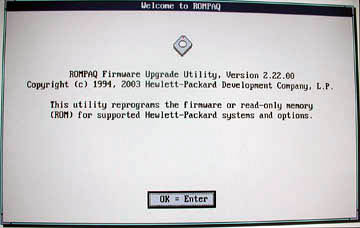
| NOTE: | In the screen above, “Version 2.22.00” refers to the version of the Upgrade Utility, not to the version of the BIOS. |
At the Select a device screen ( Illustration 2), verify that HP System BIOS is selected and press <Enter>.
Illustration 2: Select a device Screen
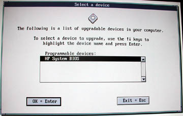
At the Select an image screen ( Illustration 3), verify that Ver 2.10 is selected and press <Enter>.
Illustration 3: Select an image Screen
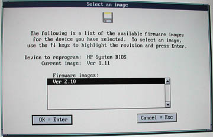
One or two Note screens may appear. Press <Enter> to answer the questions as shown below:
The image you have selected is not newer than the current image. Do you still want to reprogram your firmware for this image?, press <Enter>.
A backup image of your current system ROM has been created., press <Enter>.
At the Caution! screen ( Illustration 4), verify that HP System BIOS is shown for Device to reprogram and Ver 2.10 is shown for Selected image. Then press <Enter>.
Illustration 4: Caution! Screen
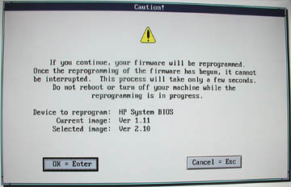
The BIOS will begin to flash from the BIOS media. Wait while the computer is being reprogrammed ( Illustration 5). Allow the BIOS to flash completely.
Illustration 5: Reprogramming firmware
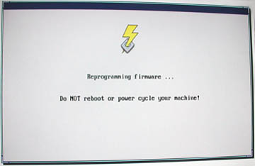
When the BIOS flash process is complete, a message will be displayed stating: The system ROM has been successfully reprogrammed. Press <Enter>.
When prompted: Do you want to reprogram another device? press <Esc>.
When prompted, remove the bootable media from the drive to prevent a second BIOS boot-up, then press the power button on the front of the Host Computer. The Host Computer will proceed to reboot.
| NOTE: | If the BIOS v2.10 Configuration diskette is not available,
proceed to the proper table in Section 5 for required GE specified BIOS settings to manually
change the settings. Power must be applied to the xw8200 Host Computer and Operator Console. |
If needed, open the Operator Console front cover.
Insert the diskette Linux Console BIOS v2.10 Configuration Disk into the xw8200 Host Computer.
If you did not flash the Host BIOS, reboot the Host Computer now.
When the hp invent screen appears, press <F10> to access the Hewlett-Packard Setup Utility.
At the language prompt, leave the setting on English or arrow down to the language you prefer. Then press <Enter>.
At the File menu, use the down-arrow key to highlight Restore from Diskette. (See Illustration 6.)
Illustration 6: File - Restore from Diskette
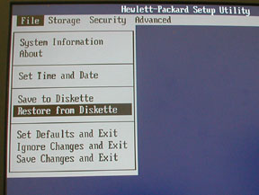
A pop-up screen appears, select drive Diskette A and press <F10> to continue.
When the restore is completed, a pop-up will be displayed indicating success ( Illustration 7). Press any key to continue.
Illustration 7: Success
Remove the 2.10 Configuration Diskette from Drive A.
At the File menu, use the down-arrow key to highlight Save Changes and Exit ( Illustration 8), then press <Enter>.
Illustration 8: File - Save Changes and Exit
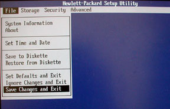
The following message is displayed:
Are you sure you want to Save Changes and Exit? F10=yes, Esc=No
Be sure to press <F10> to Save the settings. The HP will reboot. BIOS Configuration is complete.
| NOTE: | LSI Logic SCSI Setup screens may be in error. If issues are suspected relating to SCSI Order, proceed to SCSI Setup and follow the next steps. If you do not need to go into SCSI Setup, then the BIOS setup and configuration is complete. |
(For SCSI Setup) When the screen displays this message: Press Ctrl-C to start LSI Logic Configuration Utility…, press any key.
The screen will display this message: Press Ctrl-C to start LSI Logic Configuration Utility….
| NOTE: | When this message appears, press <Ctrl+C> to proceed to the LSI Logic MPT SCSI Setup Utility. Go to Section 6, Appendix B. |
Table 1: Settings for CT 4/8/16 HP xw8200 Host Computer (FX14) (PN 5117866-24) and CT 4/8/16 HP xw8200 Host Computer (FX15) (PN 5117866-48)
| Hardware | ||||
| CT 4/8/16 HP xw8200 Host Computer (FX14) (PN 5117866-24) | ||||
| CT 4/8/16 HP xw8200 Host Computer (FX15) (PN 5117866-48) | ** Requires drivers on 6.2.8 (or greater) OS DVD ** | |||
| SCSI Channel 0 Disk | Ultra 320 73 GB 15K RPM 1st (bottom) disk (SCSI ID 0) | |||
| SCSI Channel 1 Disks | Ultra 320 73 GB 15K RPM 2nd (middle) disk (SCSI ID 1) | |||
| Ultra 320 73 GB 15K RPM 3rd (top) disk (SCSI ID 2) | ||||
| Note: Both Hard Disk Drives should be the same model number and firmware version for optimal RAID0 performance. The Image Disk Drives require SCSI ID jumpers installed. | ||||
| Main Memory | 2 GB (sites with DMPR Option must upgrade to 4GB) | |||
| PC BIOS Settings (Bold = changes from default values) | ||||
| BIOS Version: | 786B8 | v02.10 | ||
| English | ||||
| Security | Network Service Boot: | Disable then <F10> to Accept | ||
| Advanced | Power/Sleep/Wake: | |||
| · After Power Loss | On | |||
| · S5 Wake on LAN | Disable then <F10> to Accept | |||
| Processors: | ||||
| · Hyper-Threading | Enable then <F10> to Accept | |||
| Device Options: | ||||
| · Network Controller Option ROM: | ||||
| Slot 1PCI (OPEN): | Disable then <F10> to Accept | |||
| · Slot 1 Option ROM: | ||||
| Slot 2 PCI (Graphics Card): | Disable then <F10> to Accept | |||
| · Slot 2 Option ROM: | ||||
| Slot 3 PCI (Open): | Disable then <F10> to Accept | |||
| · Slot 3 Option ROM: | ||||
| Slot 4 PCI (Open): | Disable then <F10> to Accept | |||
| · Slot 4 Option ROM: | ||||
| Slot 5 PCI (NIC): | Disable then <F10> to Accept | |||
| · Slot 5 Option ROM: | ||||
| Slot 6 PCI (NIC): | Disable then <F10> to Accept | |||
| · Slot 6 Option ROM: | ||||
| Slot 7 PCI (SCSI Card): | Disable then <F10> to Accept | |||
| · Slot 7 Option ROM | ||||
| Disable then <F10> to Accept | ||||
| File | Save Changes and Exit | <F10> to Accept | ||
| LSI Configuration Utility | Press <Ctrl-C>. | |||
| Global Properties: | Use <F2> and arrow key to navigate to Global Properties, then select <Enter>. | |||
| Disable Integrated RAID | [Yes] | |||
| Select First SCSI Channel (top row) | Then select <Enter>. | |||
| <Device Properties> | Select <Enter>. | |||
| Set ID 8 through 15 to [No] | Disable SCAN ID for devices 8 through 15 as [No] on internal SCSI controller channel 0 and then press <Esc> to exit the screen. | |||
| <Save changes then exit this menu> | Then select <Enter>. | |||
| Select First SCSI Channel (bottom row) | Then select <Enter>. | |||
| <Device Properties> | Select <Enter>. | |||
| Set ID 8 through 15 to [No] | Disable SCAN ID for devices 8 through 15 as [No] on internal SCSI controller channel 1 and then press <Esc> to exit the screen. | |||
| <Save changes then exit this menu> | Then select <Enter>. | |||
| Exit the utility | Press <Esc> to exit the utility. | |||
Table 2: Settings for VCT HP xw8200 Host Computer (FX14) (PN 5117866-28) and VCT HP xw8200 Host Computer (FX15)
| Hardware | ||||
| VCT HP xw8200 Host Computer (FX14) (PN 5117866-28) | ||||
| VCT HP xw8200 Host Computer (FX15) (PN 5117866-51) | ** Requires drivers on 6.2.8 (or greater) OS DVD ** | |||
| SCSI Channel 0 Disk | Ultra 320 73 GB 15K RPM 1st (bottom) disk (SCSI ID 0) | |||
| SCSI Channel 1 Disks | Ultra 320 73 GB 15K RPM 2nd (middle) disk (SCSI ID 1) | |||
| Ultra 320 73 GB 15K RPM 3rd (top) disk (SCSI ID 2) | ||||
| Note: Both Hard Disk Drives should be the same model number and firmware version for optimal RAID0 performance. The Image Disk Drives require SCSI ID jumpers installed. | ||||
| Main Memory | 4 GB | |||
| PC BIOS Settings (Bold = changes from default values) | ||||
| BIOS Version: | 786B8 | v02.10 | ||
| English | ||||
| Security | Network Service Boot: | Disable then <F10> to Accept | ||
| Advanced | Power/Sleep/Wake: | |||
| · After Power Loss | On | |||
| · S5 Wake on LAN | Disable then <F10> to Accept | |||
| Processors: | ||||
| · Hyper-Threading | Enable then <F10> to Accept | |||
| Device Options: | ||||
| · Network Controller Option ROM: | Disable then <F10> to Accept | |||
| Slot 1 PCI (OPEN): | ||||
| · Slot 1 Option ROM: | Disable then <F10> to Accept | |||
| Slot 2 PCI (Graphics Card): | ||||
| · Slot 2 Option ROM: | Disable then <F10> to Accept | |||
| Slot 3 PCI (Open): | ||||
| · Slot 3 Option ROM: | Disable then <F10> to Accept | |||
| Slot 4 PCI (Open): | ||||
| · Slot 4 Option ROM: | Disable then <F10> to Accept | |||
| Slot 5 PCI (NIC): | ||||
| · Slot 5 Option ROM: | Disable then <F10> to Accept | |||
| Slot 6 PCI (NIC): | ||||
| · Slot 6 Option ROM: | Disable then <F10> to Accept | |||
| Slot 7 PCI (SCSI Card): | ||||
| · Slot 7 Option ROM | Disable then <F10> to Accept | |||
| File | Save Changes and Exit | <F10> to Accept | ||
| LSI Configuration Utility | Press <Ctrl-C> | |||
| Global Properties: | Use <F2> and arrow key to navigate to Global Properties, then select <Enter>. | |||
| Disable Integrated RAID | [Yes] | |||
| Select First SCSI Channel (top row) | Then select <Enter>. | |||
| <Device Properties> | Select <Enter>. | |||
| Set ID 8 through 15 to [No] | Disable SCAN ID for devices 8 through 15 as [No] on internal SCSI controller channel 0 and then press the Esc key to exit the screen. | |||
| <Save changes then exit this menu> | Then select <Enter>. | |||
| Select First SCSI Channel (bottom row) | Then select <Enter>. | |||
| <Device Properties> | Select <Enter>. | |||
| Set ID 8 through 15 to [No] | Disable SCAN ID for devices 8 through 15 as [No] on internal SCSI controller channel 1 and then press <Esc> to exit the screen. | |||
| <Save changes then exit this menu> | Then select <Enter>. | |||
| Exit the utility | Press <Esc> to exit the utility | |||
The following steps verify that the SCSI channel settings are set correctly for each channel/disk/controller.
Remove power to the Host Computer by pressing the power button on the front for 5 seconds.
Reboot the Host Computer by pressing the power button again.
| NOTE: | If issues occur, try halting and then a power sequence. |
While the computer is booting, verify at the bottom-left of the screen that the BIOS version indicates Version 2.10.
Press any key when prompted.
When prompted, press <Ctrl+C> to interrupt the boot-up sequence and to start the LSI Logic MPT SCSI Configuration Utility.
Press <F2> to highlight the Main selections.
Select Global Properties, and press <Enter>.
Select Disable Integrated Raid ( Illustration 9), and press <Enter> to toggle to Yes.
Illustration 9: Global Properties
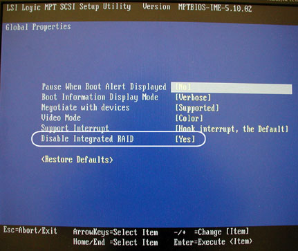
Press <Esc> to exit from the Global Properties screen.
In the LSI Logic MPT SCSI Setup Utility, select the adapter which is identified by “Boot Order 0” ( Illustration 10) and press <Enter> to access the Adapter Properties menu.
Illustration 10: Boot Adapter List - Boot Order 0
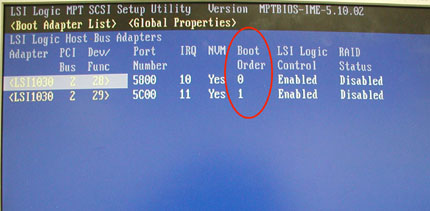
The process shows: Scanning for devices
| NOTE: | The Host SCSI ID is always set to 7. Do not modify any settings on the Adapter Properties screen. |
Illustration 11: “Adapter Properties” Window - Boot Order 0
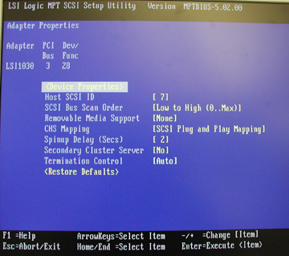
Verify that the settings are as shown in Illustration 11.
Highlight Device Properties and press <Enter>.
For SCSI ID 0 through SCSI ID 7, verify that Scan ID values are set to [Yes] as shown in Illustration 12.
If needed, navigate to any that need to be changed and press the <-> key to toggle the Scan ID values to [Yes]
Illustration 12: Device Properties - Scan ID
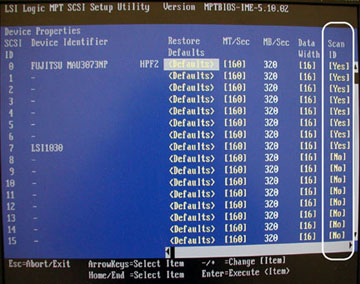
For SCSI ID 8 through SCSI ID 15, set Scan ID to [No] as shown in Illustration 12.
Navigate to any that need to be changed and press the <-> key to toggle the Scan ID values to [No].
Press <Esc> to exit the Device Properties setup screen.
Press <Esc> to exit the Adapter Properties screen.
(For when changes were made) Navigate to Save Changes then exit this menu ( Illustration 16), and press <Enter> to save the changes.
In the LSI Logic MPT SCSI Setup Utility, select the adapter identified by “Boot Order 1” ( Illustration 13) and press <Enter> to access the Adapter Properties menu ( Illustration 14).
Illustration 13: Boot Adapter List - Boot Order 1
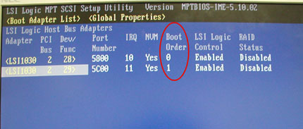
The process shows: Scanning for devices
Illustration 14: “Adapter Properties” Window - Boot Order 1
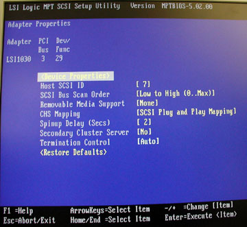
Verify that the settings are as shown in Illustration 14.
Highlight Device Properties and press <Enter>.
For SCSI ID 0 through SCSI ID 7, verify that Scan ID values are set to [Yes] as shown in Illustration 15.
Illustration 15: Device Properties - Scan ID
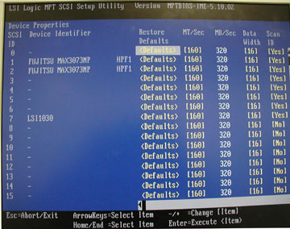
If needed, navigate to any that need to be changed and press the <-> key to toggle the Scan ID values to [Yes].
For SCSI ID 8 through SCSI ID 15, set Scan ID to [No] as shown in Illustration 15.
Navigate to those that need to be changed and press the <-> key to toggle the Scan ID values to [No].
Press <Esc> to exit the Device Properties setup screen.
Press <Esc> to exit the Adapter Properties screen.
(For when changes were made) Navigate to Save changes then exit this menu ( Illustration 16) and press <Enter> to save the changes.
Illustration 16: File - Save Changes and Exit
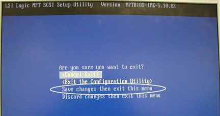
Press <Esc> to exit the LSI Logic MPT SCSI Setup Utility screen.
Select (Exit the Configuration Utility) and press <Enter>.